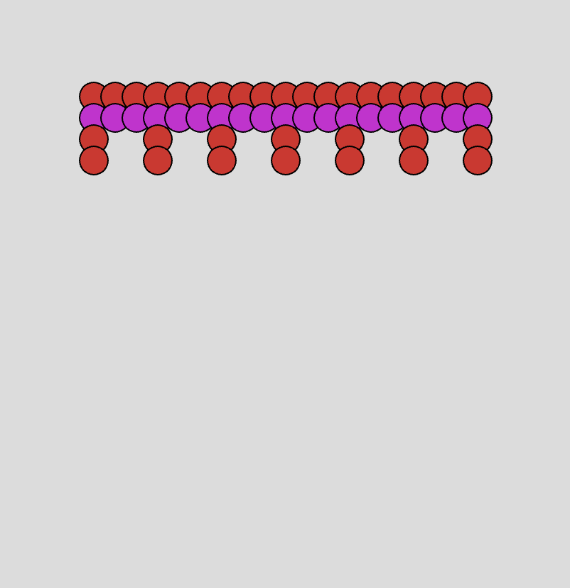
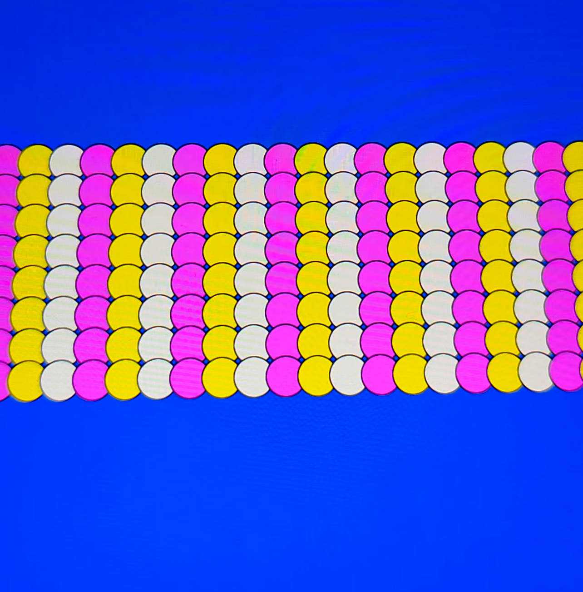
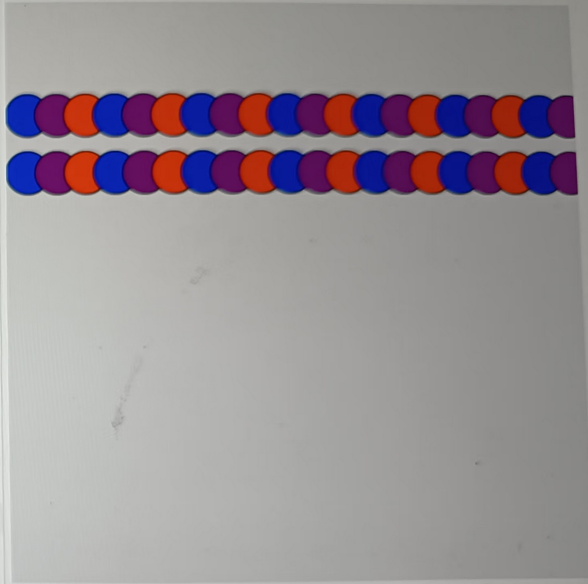
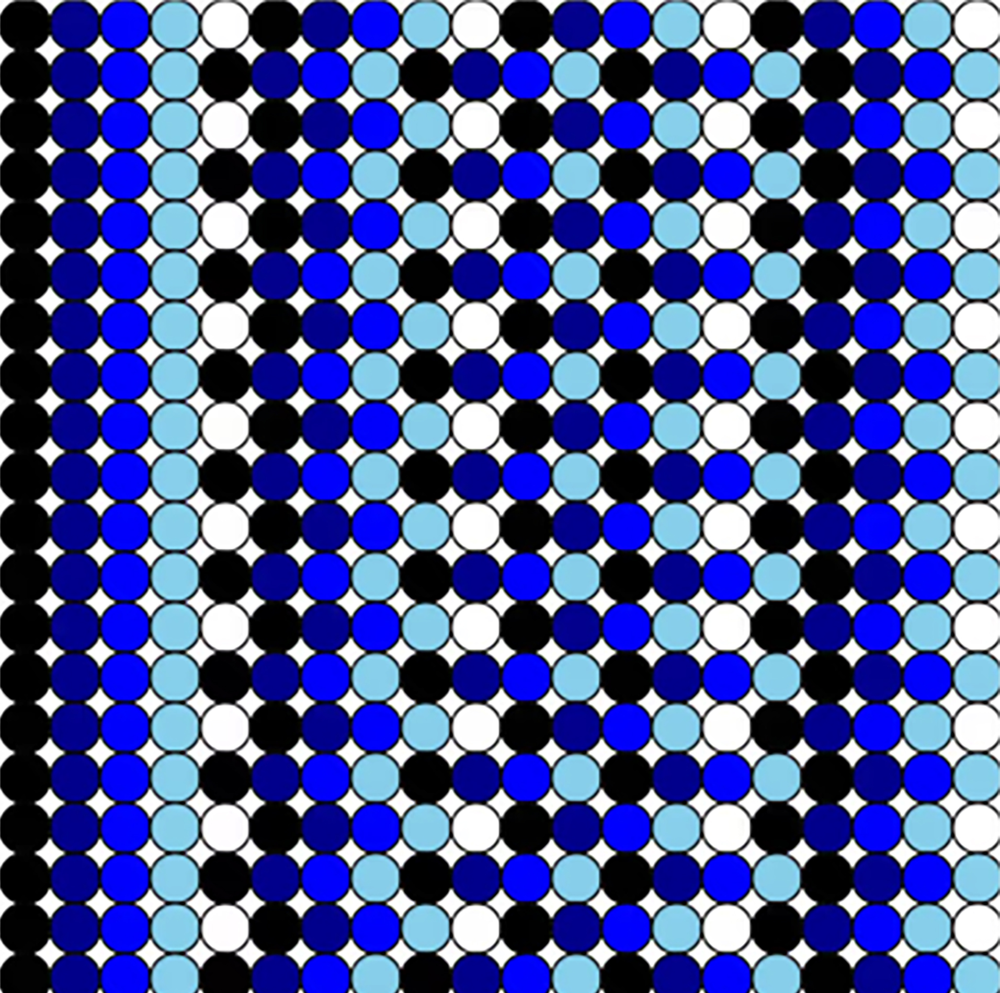

×

This workshop explores the connections between programming, knitting, and poetic writing. Participants discover how early computer programs were created for the textile industry, while centuries-old textile traditions already embodied forms of mathematical coding.
I am a writer, researcher and creative coder from Quito, Ecuador.
I hold MAs with Distinction in New Media (University of Leeds) and Literature (UASB). My research weaves together formal literary analysis and computational practice.



